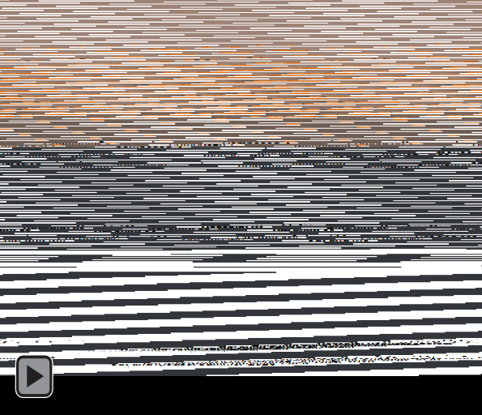
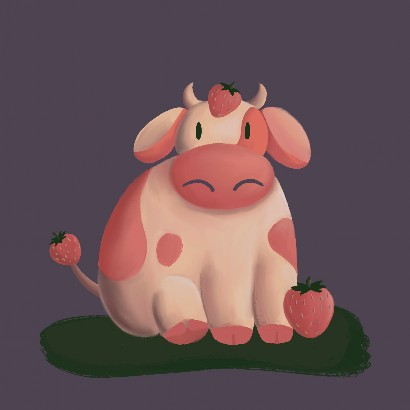
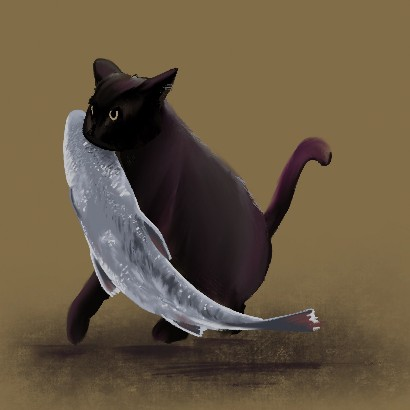
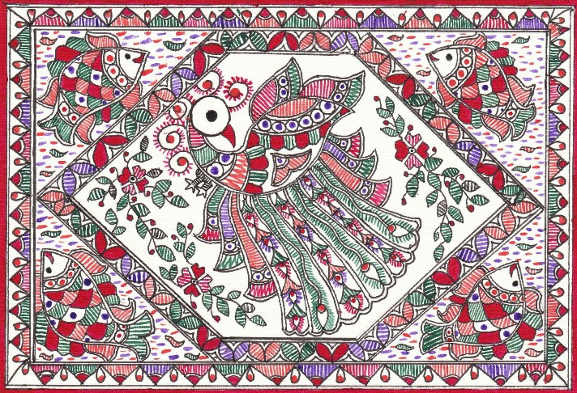
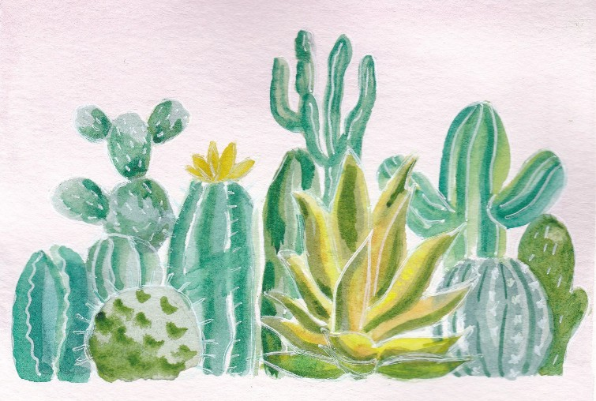
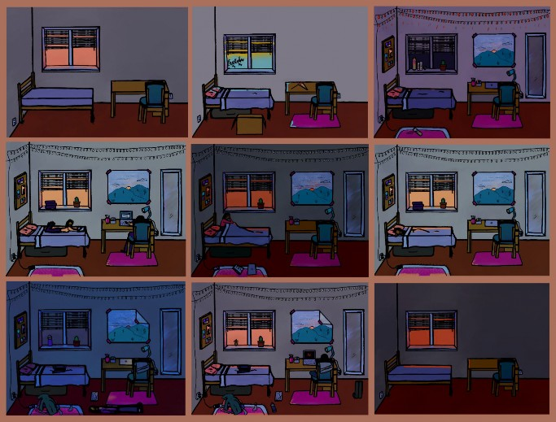
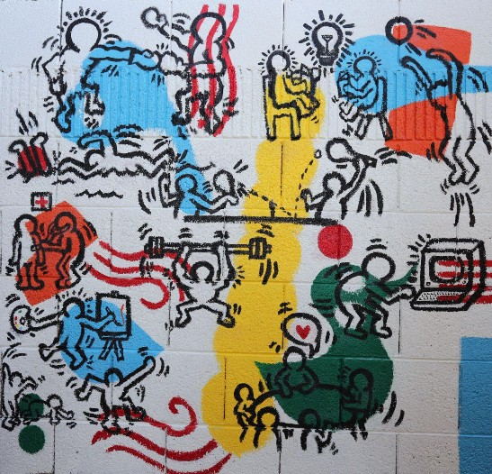
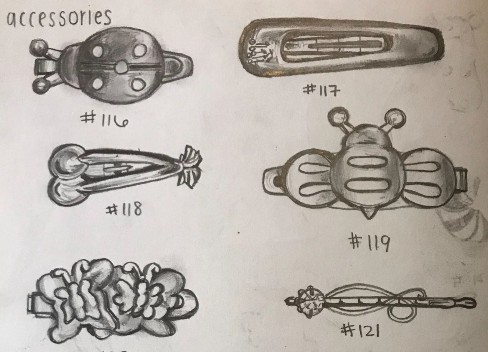
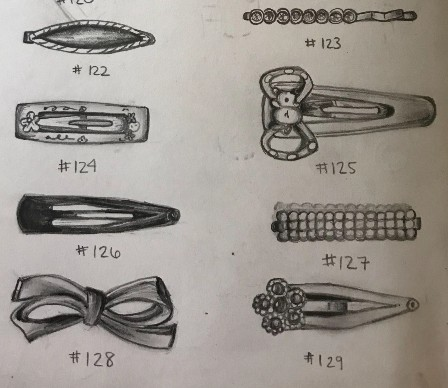
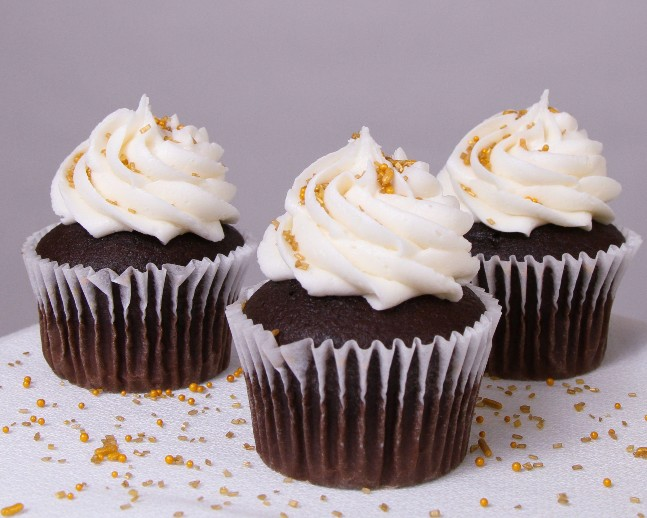

Composed of 36 hand- drawn frames, this cat and mouse was my first serious practice with 2D animation.
Harshini Venkatachalam, Cat and Mouse, Summer 2020


Strawberry Cow v2, Summer 2020

Fish and Cat, Summer 2020
This is an example of Madhubani, a form of traditional Indian painting.
The hallmarks of this style are certain lines, repetition and detail, and bright color palettes. I learned this style when I was very young; this work was the capstone of my training.
Harshini Venkatachalam, Peacock, 2011

I am from Arizona and am inspired by the diversity of plant life in the desert.
Summer 2020

With this work, I wanted to depict the relationship between a dorm room and its resident over the course of a semester. I hoped to explore how an unknown space becomes a home.

This mural was made for a final project in a Global Art History class, in which students were told to replicate an impactful historical work. I chose Keith Haring - Boys Club Mural (1987) in order to examine how abstraction of human forms functions in various contexts.
6’ x 6’



I dug out my childhood hairpins to focus on detail, light, and contrast for an introductory art class sketching assignment.
